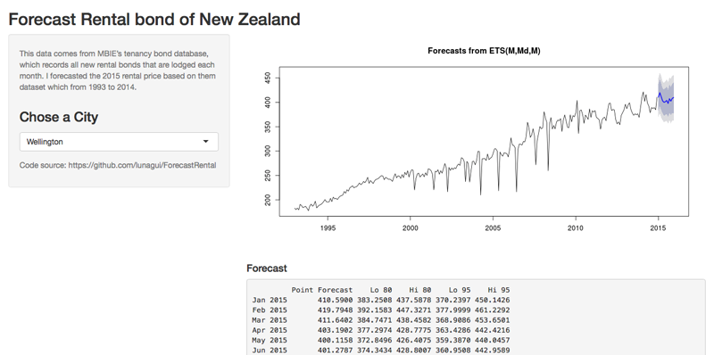

- Forecasting is required in many situations
From Stock market to House price, there are lost of demending out there. More practical for one person
I really want to creat a Robot, but it's hard to do it by myself.It's fun!
Luna
More practical for one person
I really want to creat a Robot, but it's hard to do it by myself.
It's fun!

The APP live here: https://luna.shinyapps.io/rents/
The data
I download the data comes from MBIE’s tenancy bond database, which records all new rental bonds that are lodged each month.
Forecast for Auckland
DT <- read.csv("data/geometric-mean-rents-by-ta.csv")
ts1 <- ts(subset(DT, select = Auckland), start = 1993, frequency=12)
ets1 <- ets(ts1,model="MMM");forec <- forecast(ets1, h = 12);plot(forec)
That will be better if we can add more factors like bedrooms, bathrooms or Land area. They had raw data, but that based on how well I can understand them.
Forecast is a special fild of data since, which need more understanding of method R used to. I will dig them more.
Welcome anybody that intersted in and cantact with me: guiliying@gmail.com